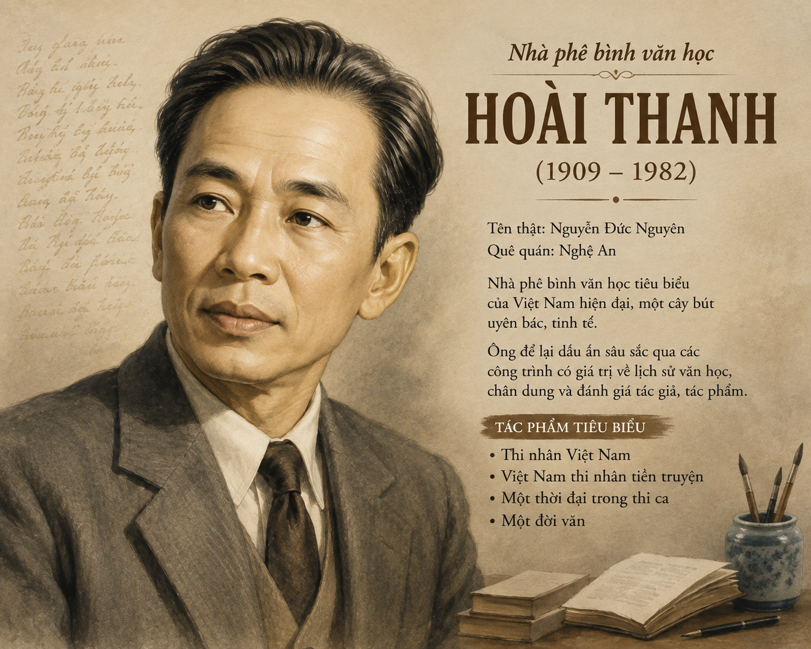

● Có bao giờ bạn băn khoăn khi phải phân biệt cái mới với cái cũ? Hãy chia sẻ trải nghiệm của mình.
● Bạn hãy lựa chọn và so sánh một bài thơ thuộc phong trào Thơ mới với một bài thơ thuộc thời kì trung đại để tìm ra những điểm khác biệt.

Hình hx.png: Nhà phê bình văn học Hoài Thanh (1909–1982)📌 Nhận định cốt lõi:
Ranh giới giữa thơ mới và thơ cũ không thể rạch ròi nếu chỉ dựa vào một vài câu thơ hay dở ngẫu nhiên. Muốn hiểu đúng tinh thần thơ, phải "sánh bài hay với bài hay" và nhìn vào đại thể.
"Hôm nay đã phôi thai từ hôm qua và trong cái mới vẫn còn rớt lại ít nhiều cái cũ."
❓ Câu hỏi đọc hiểu 1: Cái khó khi phân biệt rạch ròi giữa Thơ mới và Thơ cũ là gì?
💡 Định nghĩa tinh thần Thơ mới:
"Tinh thần thời xưa – hay thơ cũ – và thời nay – hay thơ mới – có thể gồm lại trong hai chữ TA và TÔI."
❓ Câu hỏi đọc hiểu 2: Tình trạng cái "Tôi" khi mới xuất hiện trên thi đàn Việt Nam được miêu tả ra sao?
🔥 Sự phân hóa nội tâm của cái "Tôi":
Mất bề rộng (đoàn thể), cái "Tôi" đi tìm bề sâu tâm hồn. Nhưng càng đi sâu càng cảm thấy lạnh giá và bơ vơ:
=> Bi kịch lớn nhất:
"Thiếu một lòng tin đầy đủ" – Thiếu sự bình yên thời trước, nhìn vào tâm hồn mình chỉ thấy thiếu thốn, bàng hoàng, cô đơn.
🖐️ Hoạt động / Nêu vấn đề: Làm thế nào các nhà thơ Mới giải thoát khỏi bi kịch bế tắc của cái "Tôi"?
📜 Kết luận có tính khẳng định:
● "Tiếng Việt là tấm lụa đã hứng vong hồn những thế hệ qua." Họ mượn tấm hồn bạch chung để gửi nỗi băn khoăn riêng.
● Thấu hiểu và đồng cảm sâu sắc với câu nói: "Truyện Kiều còn, tiếng ta còn; tiếng ta còn, nước ta còn." (Phạm Quỳnh)
● Từ trong thất vọng đã nảy mầm hi vọng: Tinh thần nòi giống và thi ca dân tộc chỉ biến thiên chứ không bao giờ tiêu diệt.
Phát ra bằng âm thanh, tiếp nhận bằng thính giác. Thường dùng từ ngữ khẩu ngữ, câu ngắt quãng, có sự trợ giúp của điệu bộ, ngữ điệu.
Thể hiện bằng chữ viết, tiếp nhận bằng thị giác. Được gọt giũa, chọn lọc, câu văn mạch lạc, đúng quy chuẩn ngữ pháp.
| Tiêu chí | Lỗi Lạc phong cách | Cách sửa chuẩn mực |
|---|---|---|
| Ví dụ 1 | "Chí Phèo là truyện ngắn đỉnh nhất của Nam Cao." | "Chí Phèo là truyện ngắn xuất sắc nhất của Nam Cao." |
| Ví dụ 2 | "Tác phẩm miêu tả quá ư chân thực..." | "Tác phẩm miêu tả vô cùng chân thực..." |
Cuốn sách Thi nhân Việt Nam được viết chung bởi hai anh em Hoài Thanh và Hoài Chân, hoàn thành vào tháng 11/1941 và xuất bản lần đầu năm 1942. Đây được xem là "cuốn sách gối đầu giường" của nhiều thế hệ yêu thơ, tuyển chọn 169 bài thơ của 46 nhà thơ Mới xuất sắc.
Em có thể tự mình viết một đoạn văn ngắn (150 chữ) so sánh cái "Tôi" u buồn cô đơn trong bài thơ Tràng giang (Huy Cận) với cái "Tôi" đắm say, vội vàng trong Vội vàng (Xuân Diệu) để thấy rõ sự phong phú của cái "Tôi" trong Thơ mới.
Khi viết văn bản nghị luận văn học, tuyệt đối tránh sử dụng các từ ngữ khẩu ngữ, từ lóng của ngôn ngữ nói (như: quá ư, đỉnh, chuẩn bài, hết nấc...). Hãy đảm bảo tính nhất quán về phong cách ngôn ngữ viết gọt giũa và trang trọng.
Hãy vượt qua 10 câu hỏi củng cố kiến thức để giành chiến thắng!
Bài tập 1 (Phân tích sơ đồ lập luận):
Để làm sáng tỏ luận đề "Tinh thần Thơ mới", Hoài Thanh đã triển khai hệ thống luận điểm theo trình tự logic nào? Chỉ ra mối quan hệ giữa các luận điểm đó.
Lời giải chi tiết:
Mối quan hệ: Các luận điểm đi từ nguyên tắc phương pháp luận -> nhận diện bản chất -> phân tích bi kịch thực tại -> hướng giải quyết mang tính nhân văn sâu sắc.
Bài tập 2 (Phân tích biện pháp tu từ nghệ thuật):
Phân tích nghệ thuật sử dụng cấu trúc điệp từ/câu và nhịp điệu trong đoạn văn: "Ta thoát lên tiên cùng Thế Lữ, ta phiêu lưu trong trường tình cùng Lưu Trọng Lư, ta điên cuồng với Hàn Mặc Tử, Chế Lan Viên, ta đắm say cùng Xuân Diệu..."
Lời giải chi tiết:
Bài tập 3 (Kết nối đọc - viết):
Hoài Thanh cho rằng: Các nhà thơ của phong trào Thơ mới đã "dồn tình yêu quê hương trong tình yêu tiếng Việt". Viết đoạn văn (khoảng 150 chữ) trình bày suy nghĩ của bạn về ý kiến này.
Đoạn văn tham khảo mẫu:
Ý kiến của Hoài Thanh đã đánh giá sâu sắc giá trị nhân văn và tinh thần yêu nước thầm kín của các nhà thơ Mới. Trong bối cảnh đất nước mất chủ quyền, nỗi đau mất nước được họ dồn nén vào trong tâm hồn. Không thể trực tiếp cất lời đấu tranh chính trị, họ chọn cách gửi gắm bi kịch và tình yêu quê hương vào tiếng Việt – thứ ngôn ngữ thiêng liêng mài giũa qua hàng ngàn năm lịch sử. Họ sáng tạo, làm giàu cho tiếng mẹ đẻ bằng những vần thơ tài hoa, tinh tế và đầy cảm xúc. Tình yêu tiếng Việt chính là tấm gương phản chiếu lòng yêu nước thầm lặng nhưng vô cùng bền chặt. Qua đó, họ khẳng định một niềm tin bất diệt: Tiếng Việt còn thì văn hóa và sức sống của dân tộc Việt Nam sẽ mãi mãi trường tồn.